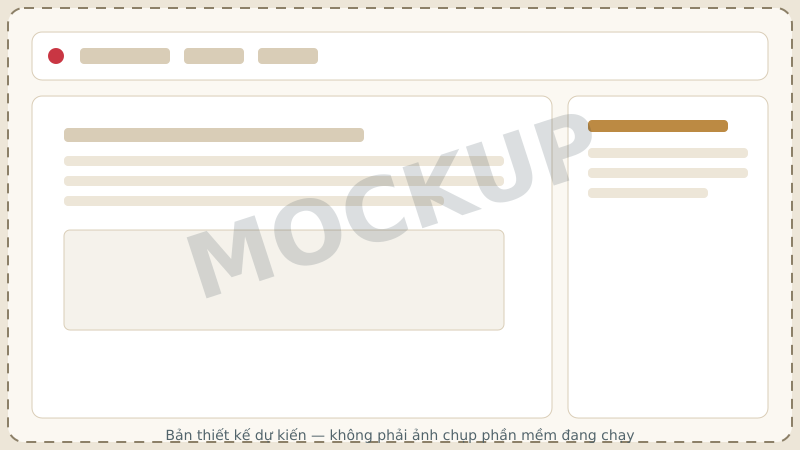

nOffice
Bộ ba ứng dụng văn phòng dựa trên lõi LibreOffice (giấy phép MPL-2.0), đổi tên và điều chỉnh giao diện cho NaMiOS. nOffice KHÔNG phải "Microsoft Office miễn phí" — là bộ riêng, được kiểm theo ma trận tính năng của chính nó.
nDoc
Văn bản hành chính, hợp đồng, giáo án — tương ứng Word.
nSheet
Bảng tính, công thức, biểu đồ, sổ kế toán — tương ứng Excel.
nSlide
Bài giảng, báo cáo, thuyết trình — tương ứng PowerPoint.
Minh họa giao diện (mockup)

Giao diện Office quen thuộc (File/Trang chủ/Chèn…) với theme riêng của NaMiOS hiện ở mức mockup — phần "ODC-009" trong kho mã nguồn ghi rõ đây là "làm tiếp", chưa phải ảnh chụp phần mềm thật đang chạy.
Ma trận tính năng và giới hạn
Lộ trình khả thi (nội bộ)
L0 — thay thế tác vụ phổ thông: mở/sửa/lưu DOCX/XLSX/PPTX, ODF, PDF; giao diện tiếng Việt; công thức/bảng/chart cốt lõi; in; không mất dữ liệu. L1 — chuyên nghiệp: layout khó, track changes, mail merge, Pivot. L2 — chuyên sâu: Power Query tương đương, add-in SDK, cộng tác thời gian thực. L3 — không thể chứng nhận chung: VBA/COM/VSTO, Office.js add-in gốc, IRM của Microsoft 365 — những tính năng này chỉ dùng được qua tuyến Windows/Microsoft 365 chính thức, không phải qua nOffice.
"Có nút menu" chưa đủ để công bố hỗ trợ.
Không phụ thuộc tài khoản
Soạn/sửa/lưu/in ngoại tuyến là mặc định — không yêu cầu đăng ký chỉ để mở tệp. Mail, cloud/cộng tác và AI cloud (nếu có) là gói tùy chọn, cần tài khoản và sự đồng ý rõ ràng.